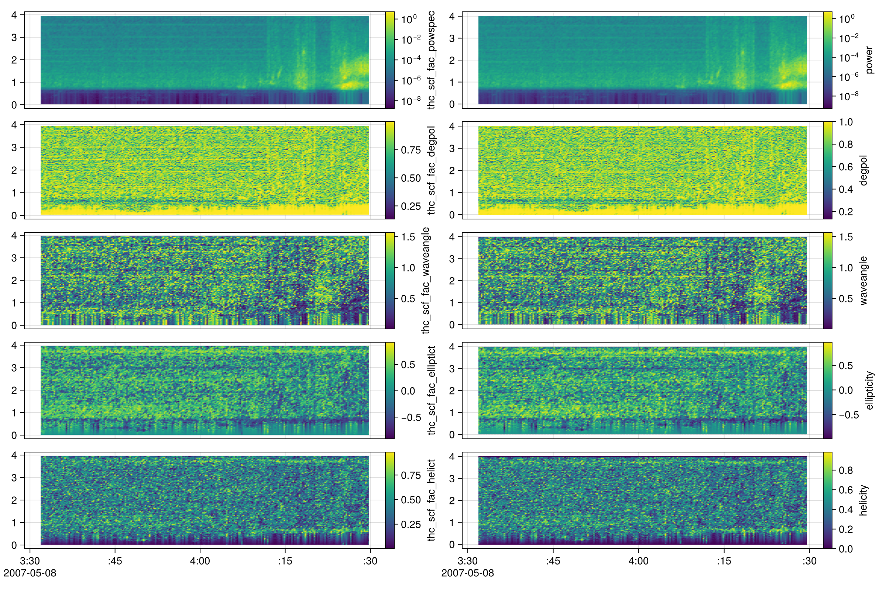
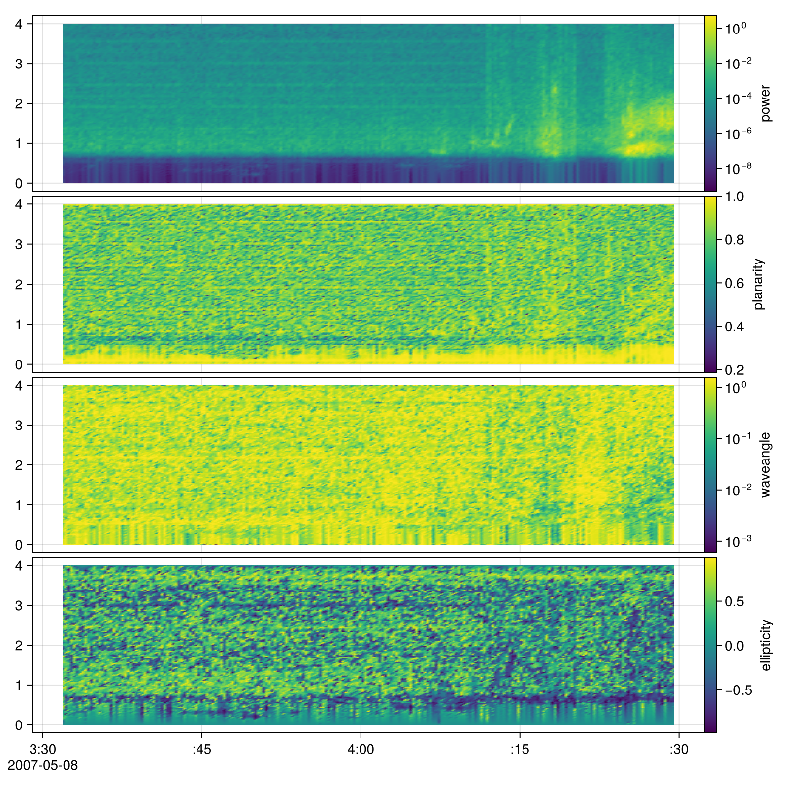

Validation with PySPEDAS
- Calling Python from Julia (via PythonCall.jl) introduces only a negligible overhead, typically within nanoseconds.
- Memory allocations shown in Julia benchmarks do not include allocations that occur within Python. To measure Python-side allocations, profiling should be done directly in Python.
- The documentation and benchmarks are generated using GitHub Actions. Running the code locally with multiple threads (e.g., by setting
JULIA_NUM_THREADS) can yield even greater performance improvements for Julia.
using PlasmaWaves
using PySPEDAS, PythonCall
using DimensionalData
using PySPEDAS: get_data
using CairoMakie, SpacePhysicsMakie CondaPkg Found dependencies: /home/runner/.julia/packages/CondaPkg/8GjrP/CondaPkg.toml
CondaPkg Found dependencies: /home/runner/.julia/packages/PythonCall/83z4q/CondaPkg.toml
CondaPkg Found dependencies: /home/runner/.julia/packages/PySPEDAS/qgs9e/CondaPkg.toml
CondaPkg Initialising pixi
│ /home/runner/.julia/artifacts/cefba4912c2b400756d043a2563ef77a0088866b/bin/pixi
│ init
│ --format pixi
└ /home/runner/work/PlasmaWaves.jl/PlasmaWaves.jl/docs/.CondaPkg
✔ Created /home/runner/work/PlasmaWaves.jl/PlasmaWaves.jl/docs/.CondaPkg/pixi.toml
CondaPkg Wrote /home/runner/work/PlasmaWaves.jl/PlasmaWaves.jl/docs/.CondaPkg/pixi.toml
│ [dependencies]
│ netcdf4 = "*"
│ libstdcxx = ">=3.4,<15.0"
│ openssl = ">=3, <3.6"
│ libstdcxx-ng = ">=3.4,<15.0"
│ uv = ">=0.4"
│ python-gil = "*"
│ certifi = "*"
│
│ [dependencies.python]
│ channel = "conda-forge"
│ build = "*cp*"
│ version = ">=3.10,!=3.14.0,!=3.14.1,<4"
│
│ [project]
│ name = ".CondaPkg"
│ platforms = ["linux-64"]
│ channels = ["conda-forge"]
│ channel-priority = "strict"
│ description = "automatically generated by CondaPkg.jl"
│
│ [pypi-dependencies.pyspedas]
└ git = "https://github.com/spedas/pyspedas"
CondaPkg Installing packages
│ /home/runner/.julia/artifacts/cefba4912c2b400756d043a2563ef77a0088866b/bin/pixi
│ install
└ --manifest-path /home/runner/work/PlasmaWaves.jl/PlasmaWaves.jl/docs/.CondaPkg/pixi.toml
✔ The default environment has been installed.Wave polarization
@py import pyspedas.analysis.tests.test_twavpol: TwavpolDataValidation
TwavpolDataValidation.setUpClass()
thc_scf_fac = get_data("thc_scf_fac") |> DimArray
py_tvars = [
"thc_scf_fac_powspec",
"thc_scf_fac_degpol",
"thc_scf_fac_waveangle",
"thc_scf_fac_elliptict",
"thc_scf_fac_helict",
]
# PySPEDAS returns non valid values at the first and last frequency bin, the last time bin is also not valid
_subset_py(x) = x[1:end-1,2:end-1]
py_result = DimStack(_subset_py.(DimArray.(get_data.(py_tvars))))
py_result.thc_scf_fac_powspec.metadata[:colorscale] = log10
py_result.thc_scf_fac_helict.metadata[:colorscale] = identity
res = twavpol(thc_scf_fac)
f = Figure(; size=(1200, 800))
tplot(f[1,1], py_result)
tplot(f[1,2], res)
f
We can also use single value decomposition (SVD) technique to calculate the wave polarization.
res = twavpol_svd(thc_scf_fac)
tplot(res)
Benchmark
using Chairmarks
@b twavpol(thc_scf_fac), twavpol_svd(thc_scf_fac), pyspedas.twavpol("thc_scf_fac")(21.303 ms (200 allocs: 1.519 MiB, without a warmup), 13.245 ms (162 allocs: 1.421 MiB, without a warmup), 4.834 s (6 allocs: 112 bytes, without a warmup))Julia is about 100 times faster than Python.